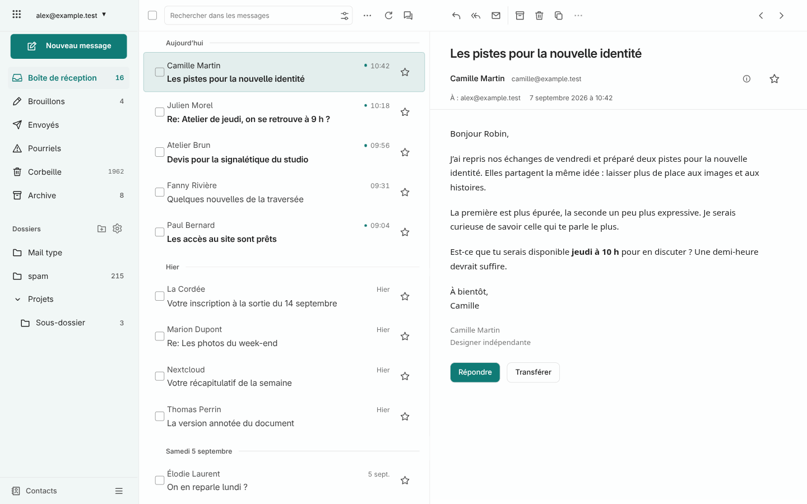

À partir de 1200 px, les dossiers, la liste et la lecture gagnent de l’espace. Aperçu à 1440 px avec des messages entièrement fictifs.

La version mobile conserve ses styles actuels. À 390 px, la capture avant et après est identique au pixel près.